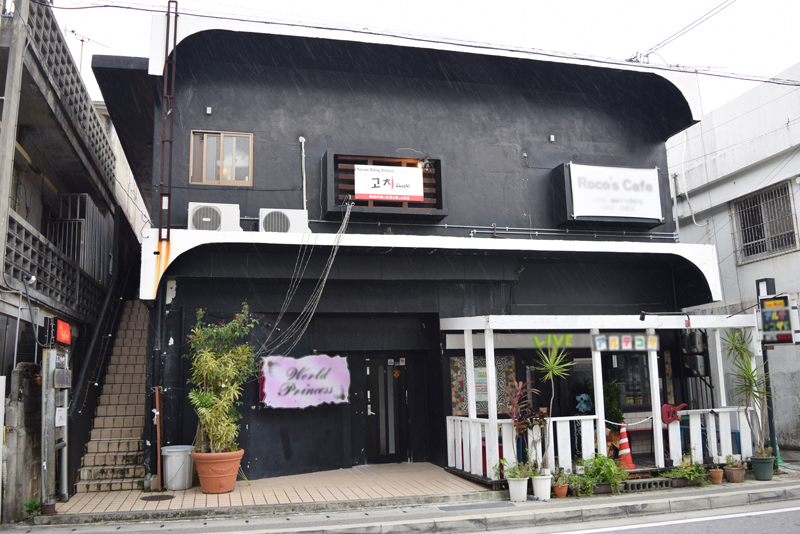
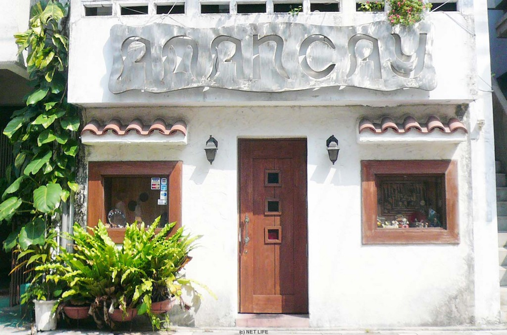
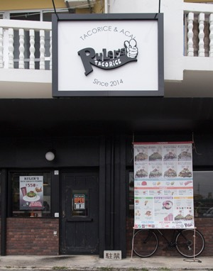
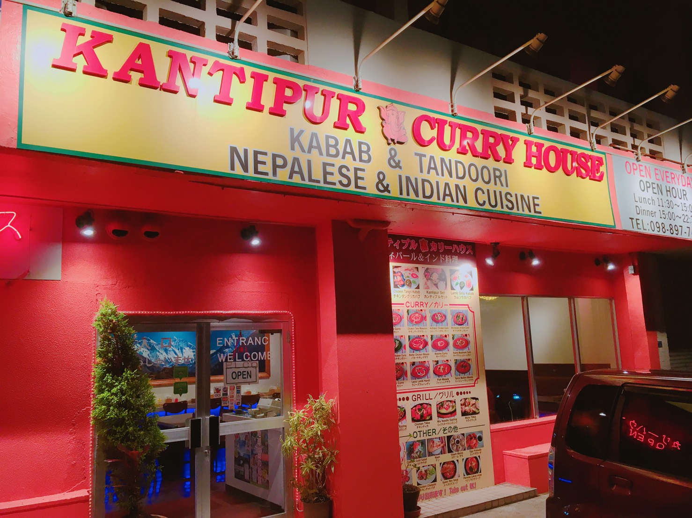
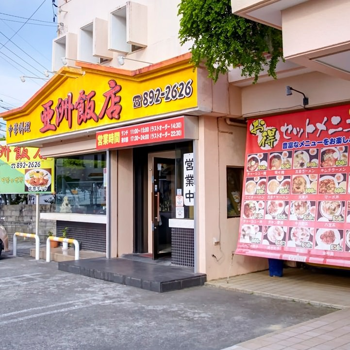
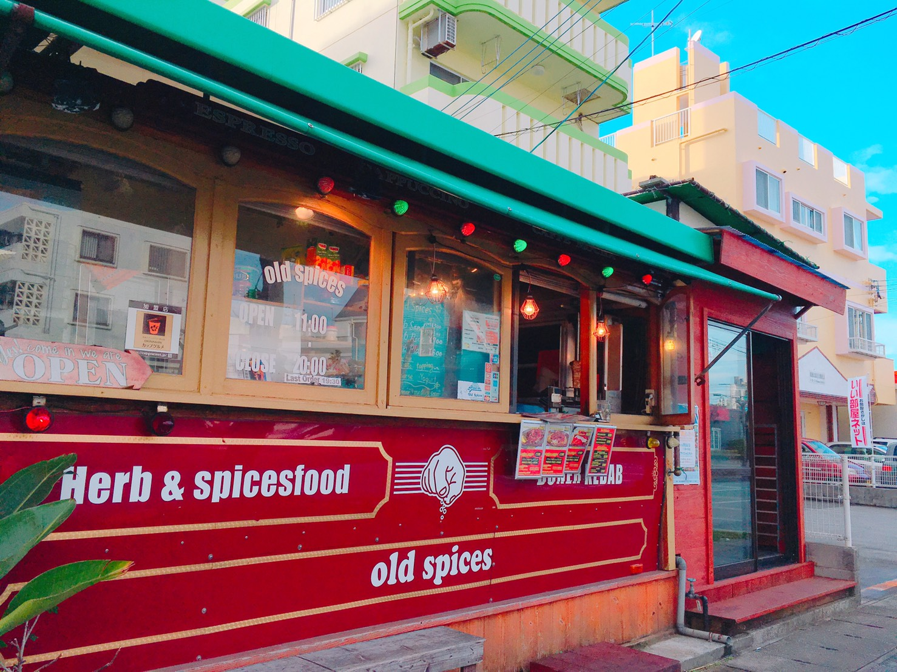
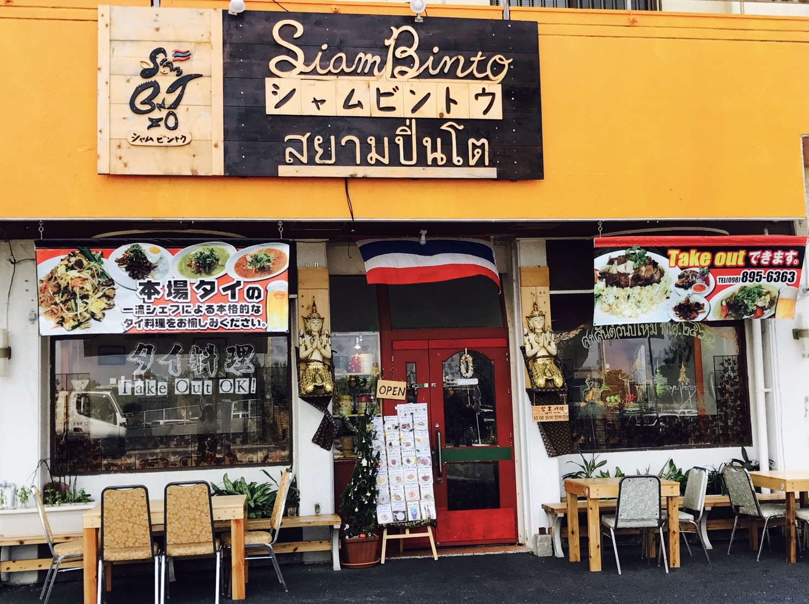

-
- 
- cocchi (韓国)
- 店内は全部で9席.知る人ぞ知る、隠れ家風レストラン。牛骨を15時間煮込んだ本格スープは、最後の一口までこってりピリ辛でうまい！コラーゲンもたっぷりで美容、滋養強壮にも効果あり。
- TEL : 080-2947-2487
- 住所 : 沖縄県沖縄市上地1-16-2 コスモス中no 町2F
- 営業時間 : pm7:00〜am3:00
- 定休日 : 火曜日(水曜日が公休日の場合、営業)
-
-
- 
- ペーニャあまんかい (アルゼンチン)
- ジューシー極太チョリソを、手作りパンに挟んだサンドが美味い！音楽が大好きな店主さんは、楽しいイベントも定期的に開催！那覇に行った際は立ち寄りたい。
- TEL : 098-862-6055
- 住所 : 沖縄県那覇市前島1-5-7 １Ｆ
- 営業時間 : 18:00～翌1:00
- 定休日 : 月曜（祝日の場合は要問合）・不定休
-
-
- 
- Rulers TACORICE (メキシコ)
- 沖縄のソウルフードと言っても過言ではないタコライスを新しいスタイルで提案。選べる味は8種類！沖縄国際大学近くのおしゃれな店内とイケメン店主のお店。
- TEL : 098-988-9225
- 住所 : 沖縄県宜野湾市真栄原3-8-2 サンライズビル 1F
- 営業時間 : [月～土] 11:00～22:00(L.O 21:45)
[ 日・祝 ] 11:00～21:00(L.O 20:45)
- 定休日 : 火曜日(水曜日が公休日の場合、営業)
-
allowfullscreen>
-
- 
- KANTIPUR CURRY HOUSE (インド)
- 沖大きなナンが迫力抜群なお店！カレーの辛さは選べる４種類♪コクのあるチキンカレーがおすすめ。さわやかなラッシーと一緒にどうぞ。
- TEL : 098-897-7419
- 住所 : 沖縄県宜野湾市大謝名４-４-２
- 営業時間 : 11:30〜22:30 LO22:00
- 定休日 : 無休
-
-
- 
- 亜洲亜飯店 (中国)
- 沖縄国際大学の目の前にある本格中華料理店！皮から手作りの餃子やシュウマイなどこだわりの料理をお手頃価格で頂けます。全メニュー、サラダとスープバー付き。
- TEL : 050-3491-1620
- 営業時間 : ランチ 11:00～15:00 （L.O.14:30）
ディナー 17:30～24:00（L.O.22:30）
- 定休日 : 月曜・不定休
-
-
- 
- オールドスパイス (トルコ)
- 本格的な肉の固まりを削ぎ落とすタイプのドネルケバブがあるお店。「ブルーチーズ」「ヨーグルト」「ハラペーニョ」の中からお好きなトッピングをセレクト！
- TEL : 098-921-7858
- 住所 : 沖縄県中頭郡北谷町北前1-20-4
- 営業時間 : 11:00～20:00
- 定休日 : なし
-
-
- 
- シャムビントゥ (タイ)
- 中頭郡中城村の本場タイの一流シェフによる本格的タイ料理店です.
- TEL : 098-895-6363
- 住所 : 沖縄県中頭郡中城村南上原944-106
- 営業時間 : 10:00～15:00 17:00～21:00
- 定休日 : 日曜日
-
-